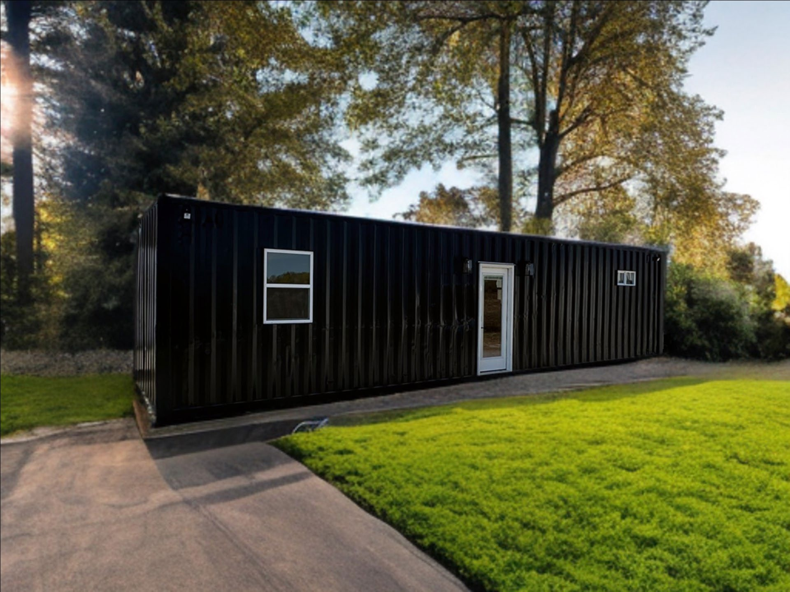
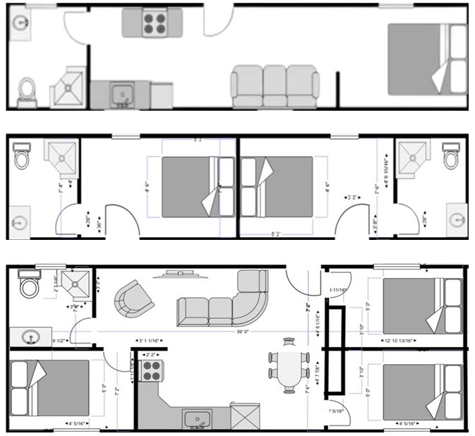
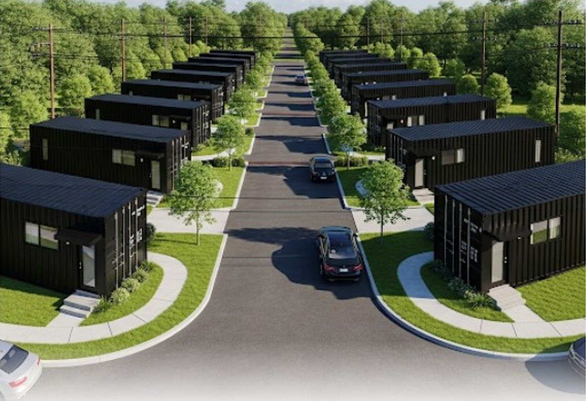
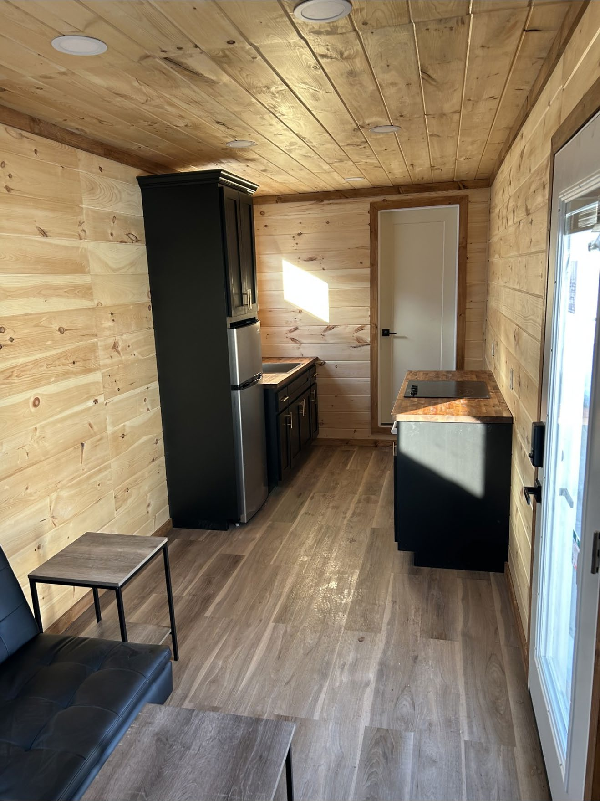
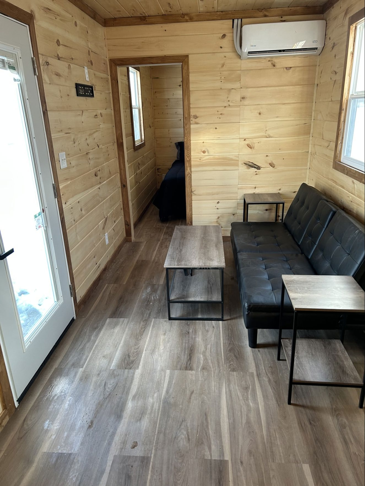
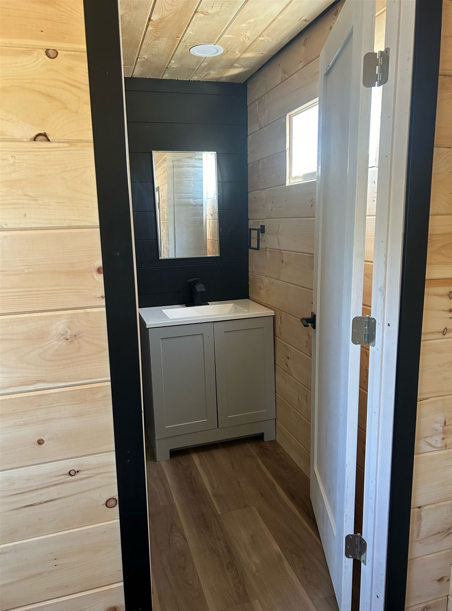

Finished · Available now
Cabin 1
$45,000 USD asking price
Finished 40-foot container home with 1 bedroom and 1 bathroom. Located in Pittsburg, Kansas.
Delivery available at additional cost.
Shop two completed 40-foot container homes in Pittsburg, Kansas, or explore a custom build below.
Custom shipping container homes built from A-grade 40' × 8' high-cube containers and configured for practical modern living in Kansas and the surrounding region.
Two finished 40-foot container homes for sale. Each has one bedroom and one bathroom. Choose a cabin below and call 620 Fabrication to purchase.
Finished 40-foot container home with 1 bedroom and 1 bathroom. Located in Pittsburg, Kansas.
Delivery available at additional cost.
Finished 40-foot container home with 1 bedroom and 1 bathroom. Located in Pittsburg, Kansas.
Delivery available at additional cost.
Call 620-687-6713 for current photographs, viewing and delivery quotes. Custom-build photographs and floor plans below are examples and do not identify either available cabin.
The specifications, photographs and floor plans in this section describe custom-build options and examples. They are not specifications or photographs of Cabin 1 or Cabin 2.

Choose a compact studio-style unit, a divided double-room layout or a larger dual-unit two/three-bedroom configuration.

Example photographs and a community rendering; not photographs of the two cabins listed for sale.




Call with your project location, target layout and intended use so we can discuss the right starting point.